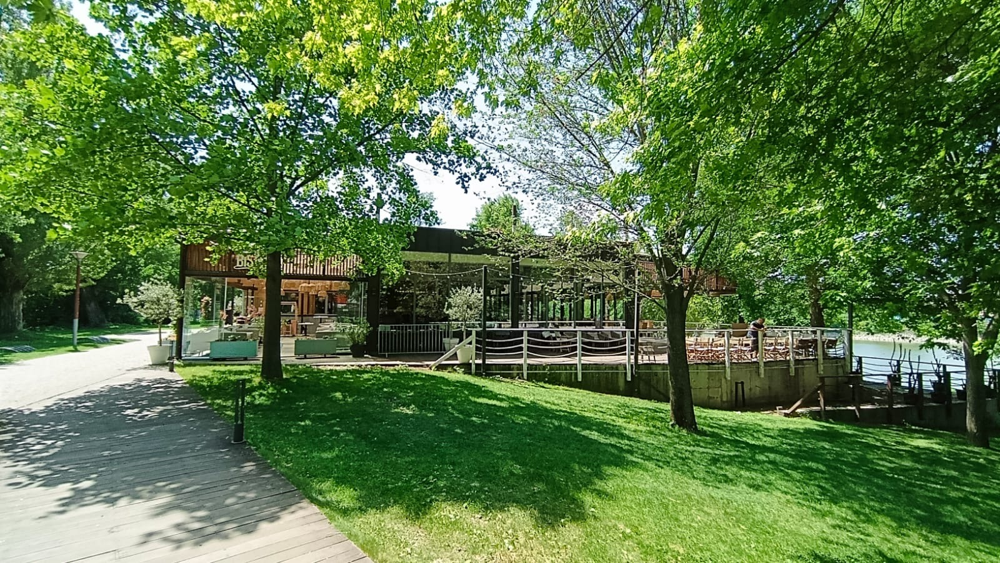
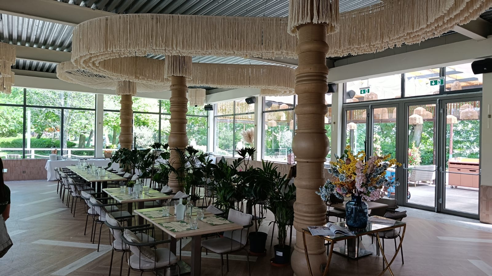
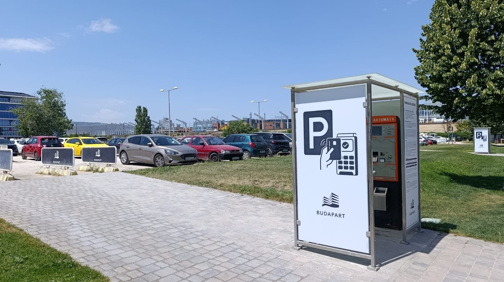
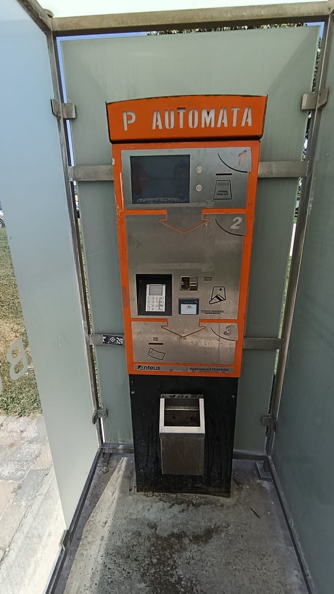
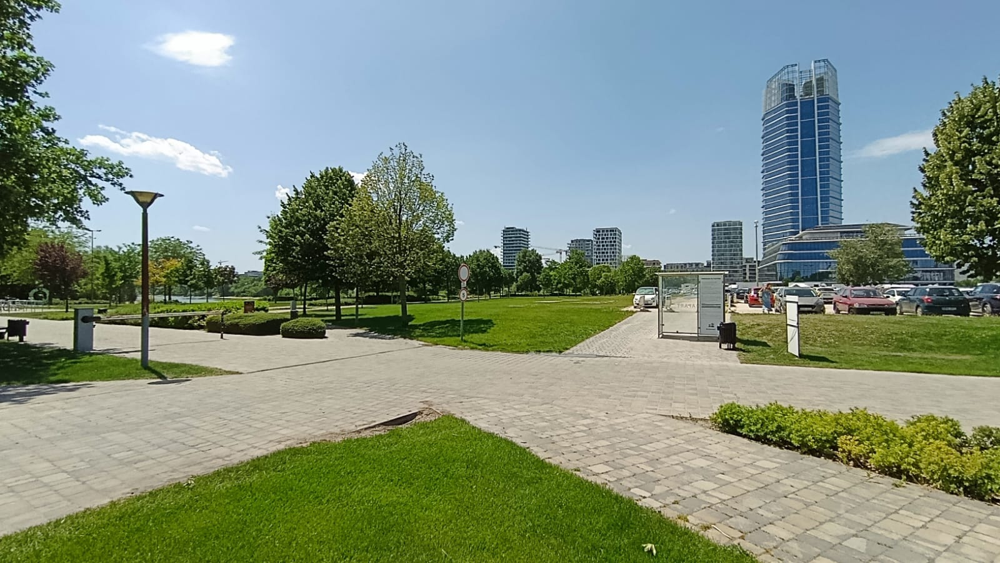
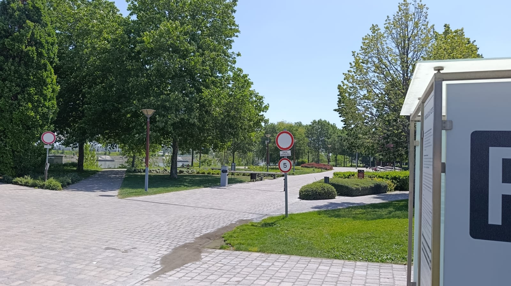

Après le cimetière, nous avons le plaisir de vous convier à un déjeuner pour partager un dernier moment ensemble en mémoire d'Edina. A temető után szeretettel meghívjuk Önt egy közös ebédre, hogy együtt töltsünk egy utolsó pillanatot Edina emlékére.
Bistro français à Budapest, salle privatisée pour la réception. Francia bisztró Budapesten, a fogadásra privát terem van fenntartva.
Voir sur Google Maps Megnyitás a Google Mapsen Site du restaurant Az étterem weboldala


Depuis le cimetière — il n'y a pas de navette organisée entre le cimetière et le restaurant. Comptez environ 30 minutes de trajet en voiture. Privilégiez le covoiturage ou le taxi.
Compagnies de taxi recommandées (opérateurs anglophones, paiement par carte accepté) :
A temetőből — nincs szervezett transzfer a temető és az étterem között. Az út autóval körülbelül 30 percet vesz igénybe. Javasoljuk a közös autózást vagy a taxit.
Ajánlott taxitársaságok (angol nyelvű diszpécser, bankkártyás fizetés elfogadott):
En voiture — parking — un grand parking payant se trouve à environ 400 m du restaurant. Barrière avec ticket à l'entrée, paiement à l'automate par carte bancaire (cartes étrangères acceptées).
Autóval — parkoló — egy nagy fizetős parkoló található az éttermtől körülbelül 400 méterre. Sorompós beléptetés jeggyel, fizetés az automatánál bankkártyával (külföldi kártyák elfogadva).


Du parking au restaurant — navette ou marche — environ 400 m à pied par une allée piétonne. Une navette du restaurant fait des allers-retours en continu entre le parking et l'entrée du Bistro, sans réservation. Recommandée pour les personnes âgées, avec bébé, jeunes enfants ou bagages.
A parkolótól az étteremig — transzfer vagy gyaloglás — körülbelül 400 méter gyalog egy sétányon keresztül. Az étterem transzfere folyamatosan közlekedik a parkoló és a Bistro bejárata között, foglalás nélkül. Idősebbek, babával, kisgyermekkel vagy csomaggal érkezők számára ajánlott.


Une télévision avec câble HDMI sera disponible sur place. Si vous souhaitez partager des photos ou des vidéos d'Edina, apportez-les sur une clé USB — nous les projetterons pendant le déjeuner.
A helyszínen egy televízió HDMI-kábellel az Önök rendelkezésére áll. Ha szeretnének Edináról fényképeket vagy videókat megosztani, hozzák magukkal USB-kulcson — az ebéd alatt levetítjük.
En cas de question, de retard ou si vous ne trouvez pas la navette. Laurent et Philippe parlent tous les deux français et hongrois — les deux numéros ci-dessous (un français, un hongrois) sont juste là pour vous éviter les frais d'appel international : Kérdés, késés esetén, vagy ha nem találják a transzfert. Laurent és Philippe is beszél franciául és magyarul — az alábbi két szám (egy francia, egy magyar) csak azért van, hogy elkerüljék a nemzetközi hívás díját:
Pour faciliter la coordination le jour J (retards, navette, questions de dernière minute), nous avons créé deux groupes WhatsApp. Rejoignez le ou les groupes : Az aznapi egyeztetés megkönnyítésére (késések, transzfer, utolsó pillanatos kérdések) létrehoztunk két WhatsApp-csoportot. Csatlakozzon az egyikhez vagy mindkettőhöz:
Ces groupes sont réservés aux personnes invitées au déjeuner. Les informations pratiques qui y seront partagées ne seront pas relayées sur la page d'accueil du site, qui reste publique. Ezek a csoportok kizárólag az ebédre meghívott vendégeknek szólnak. Az itt megosztott gyakorlati információk nem fognak megjelenni a weboldal főoldalán, amely nyilvános.
Que le Seigneur l'accueille dans sa lumière. Az örök világosság fényeskedjék neki.